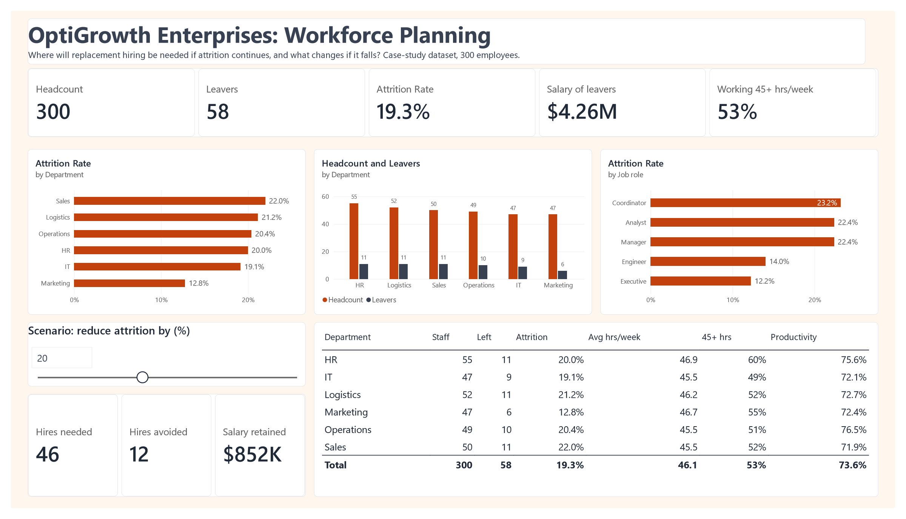

Business context
Leadership needed to size next year's recruitment effort and asked three questions:
- How many roles will need refilling if current attrition continues?
- Which departments and roles drive that demand?
- How much would a realistic improvement in retention reduce the hiring load and the salary at stake?
Data and preparation
The source is a single Excel sheet with one row per employee.
| Field | Type | Use in the analysis |
|---|---|---|
Employee_ID | Whole number | Row identifier |
Department | Text, 6 values | Main breakdown |
Job_Role | Text, 5 values | Second breakdown |
Salary ($) | Number | Salary of leavers |
Work_Hours | Whole number, 30 to 60 | Workload indicator |
Productivity_Score | Decimal, 0.46 to 1.00 | Output indicator |
Attrition_Flag | 0 or 1 | 1 means the employee left |
Checks before modelling
- No blank values in any field.
- No duplicate
Employee_IDvalues, so each row is one person. - Ranges were plausible: hours 30 to 60, productivity 0 to 1, salaries $30,136 to $210,848.
The sheet loaded cleanly, so the only modelling step was renaming the table to Workforce so the measures read clearly. The data has no dates, which limits what can be claimed (section 06).
DAX measures explained
Every figure on the dashboard comes from an explicit measure, so each number has one definition that anyone can check.
Headcount
Headcount = COUNTROWS(Workforce)Counts rows. Each row is one employee, so this returns headcount for whatever the visual is filtered to: a department, a role or the whole company.
Leavers
Leavers =
CALCULATE(COUNTROWS(Workforce), Workforce[Attrition_Flag] = 1) + 0CALCULATE adds a filter for employees flagged as leavers. The + 0 shows zero rather than a blank for any group with no leavers.
Attrition Rate
Attrition Rate = DIVIDE([Leavers], [Headcount])DIVIDE returns blank instead of an error if headcount is zero, which a plain / would not. Formatted as a percentage to one decimal place.
Avg Weekly Hours and Share Over 45 Hours
Avg Weekly Hours = AVERAGE(Workforce[Work_Hours])
Share Over 45 Hours =
DIVIDE(
CALCULATE(COUNTROWS(Workforce), Workforce[Work_Hours] > 45),
[Headcount]
)An average hides the spread, so the share of people above 45 hours shows how widespread long weeks are.
Avg Productivity
Avg Productivity = AVERAGE(Workforce[Productivity_Score])Placed next to attrition and hours so a reader can see whether high-attrition teams are also lower-output teams.
Salary of Leavers
Salary Base of Leavers =
CALCULATE(SUM(Workforce[Salary ($)]), Workforce[Attrition_Flag] = 1) + 0The annual salary attached to vacated roles. It shows what is at stake. It is not a turnover cost.
The scenario slider
A numeric what-if parameter, Attrition Reduction Pct, runs from 0 to 50 in steps of 5. Power BI creates a one-column table and a measure that returns the slider position. Three measures respond to it.
Hires Needed (Scenario)
Hires Needed (Scenario) =
ROUND(
[Leavers] * (1 - 'Attrition Reduction Pct'[Attrition Reduction Pct Value] / 100),
0
)Leavers reduced by the chosen percentage and rounded to whole people, because a plan cannot hire part of a person.
Hires Avoided
Hires Avoided = [Leavers] - [Hires Needed (Scenario)]Calculated from the rounded figure so the two cards always add back to the leaver total.
Salary Retained (Scenario)
Salary Base Retained (Scenario) =
[Salary Base of Leavers] * 'Attrition Reduction Pct'[Attrition Reduction Pct Value] / 100The salary attached to the departures the scenario avoids.
What the slider assumes
- One-for-one replacementEvery leaver is replaced. In practice some roles would be removed or merged.
- Average salaryAvoided leavers are assumed to earn the average leaver salary. Retaining higher-paid roles would raise the figure.
- Salary, not savingsSalary retained is not money saved. The saving is avoided recruitment, onboarding and lost output, which this data cannot measure.
- Even improvementThe reduction applies equally to every department and role, although targeted retention would not work that way.
Dashboard and findings

| Department | Staff | Left | Attrition | Avg hrs | Over 45 hrs | Productivity |
|---|---|---|---|---|---|---|
| Sales | 50 | 11 | 22.0% | 45.5 | 52% | 71.9% |
| Logistics | 52 | 11 | 21.2% | 46.2 | 52% | 72.7% |
| Operations | 49 | 10 | 20.4% | 45.5 | 51% | 76.5% |
| HR | 55 | 11 | 20.0% | 46.9 | 60% | 75.6% |
| IT | 47 | 9 | 19.1% | 45.5 | 49% | 72.1% |
| Marketing | 47 | 6 | 12.8% | 46.7 | 55% | 72.4% |
| Total | 300 | 58 | 19.3% | 46.1 | 53% | 73.6% |
Five of six departments lose around one in five people. Marketing is the exception, yet its staff work hours as long as anyone's.
- By role, coordinators (23.2%), analysts (22.4%) and managers (22.4%) leave far more often than engineers (14.0%) and executives (12.2%).
- 53% of staff work over 45 hours a week, rising to 60% in HR.
- Productivity varies only modestly between departments, from 71.9% to 76.5%, and does not track attrition.
Limitations
- No dates. The data is a single snapshot, so 19.3% is the share of this population that left, not an annual rate. Treating it as a one-year rate is a working assumption to replace with dated leaver data before a budget is set.
- Correlation, not cause. Hours, role and attrition are shown side by side. The analysis does not show that any one causes another.
- Case-study data. Figures describe a fictional company and are not results from an employer.
Recommendations
- Plan recruitment capacity for about 58 replacement hires at current rates, weighted towards Sales, Logistics and Operations.
- Focus retention on coordinator, analyst and manager roles. Start with stay interviews and a review of progression routes, since these roles carry the highest attrition.
- Review workload in HR, where 60% of staff exceed 45 hours a week, before it appears as attrition.
- Set a retention target with the scenario. A 20% reduction leaves 46 hires instead of 58 and keeps about $852K of salary in roles that stay filled.
- Add hire and exit dates to the data so attrition can be measured per year and tracked monthly on the same dashboard.
How to reproduce it
- Load the Excel sheet into Power BI and rename the table
Workforce. - Create the measures in sections 03 and 04 and set formats: whole numbers, percentages to one decimal place, dollars with no decimals.
- Add the parameter from Modeling > New parameter > Numeric range: 0 to 50, increment 5, default 0.
- Build the visuals in three rows as described in section 05, with one accent colour.